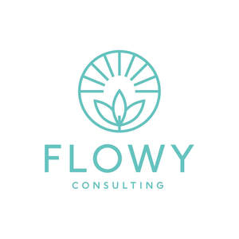

Trade Mark Journal No.2025/052 26 December 2025
UK00004304367 2 December 2025 (35,41,44)
Mark 1
Mark 2
Mark 3
Mark 4
Mark 5
Mark 6

- Class 35
- Business management and consulting; Business management consulting; Business management consultancy; Consultancy relating to the management of personnel; Business appraisals and evaluations in business matters; Business research consulting; Recruitment and personnel management services; Psychometric testing for the selection of personnel; Business management and consultancy; Personnel management consultancy services; Personnel management consultancy; Personnel management consulting; Business research; Business consulting; Business consultancy (Professional -); Personality testing for the selection of personnel; Consultancy (Professional business -); Testing to determine professional competency; Testing (Psychological -) for the selection of personnel; Business management consultancy in the field of executive and leadership development; Personnel management and employment consultancy; Development of business organization strategies relating to corporate social responsibility; Business organization and management consultancy including personnel management; Business strategy development services; Business organisation and management consultancy in the field of personnel management; Business consultancy; Management consulting; Management consultancy (Personnel -); Testing to determine employment skills; Personality testing for recruitment purposes; Management consultancy services.
- Class 41
- Life coaching (training); Coaching [training]; Training; Management training consultancy services; Teaching of meditation practices; Health and fitness training; Business training; Providing training courses on business management; Bodywork therapy instruction; Yoga instruction; Training and further training consultancy; Exercise and fitness classes; Exercise classes; Education and training in the field of business management; Management training services; Training in communication techniques; Meditation training; Training in yoga; Training services in the field of project management; Training or education services in the field of life coaching; Conducting workshops and seminars in self awareness; Courses (Training -) relating to management; Personal coaching [training]; Training in business skills; Training in the field of business management; Organisation of training seminars; Training in philosophy; Conducting workshops and seminars in personal awareness; Training courses; Organisation of training courses; Personal development training; Personal development courses; Health education; Health and wellness training; Coaching.
- Class 44
- Health care relating to naturopathy; Ayurveda therapy; Health consultancy; Occupational health consultancy; Consultancy services relating to nutrition; Psychologist (Services of a -); Bodywork therapy; Herbalism; Services of a psychologist; Meditation services; Professional consultancy relating to health; Consultancy services related to nutrition; Consultancy services in the field of nutrition; Professional consultancy relating to nutrition; Professional consultancy relating to diet; Nutrition consultancy.
Navneet Rai